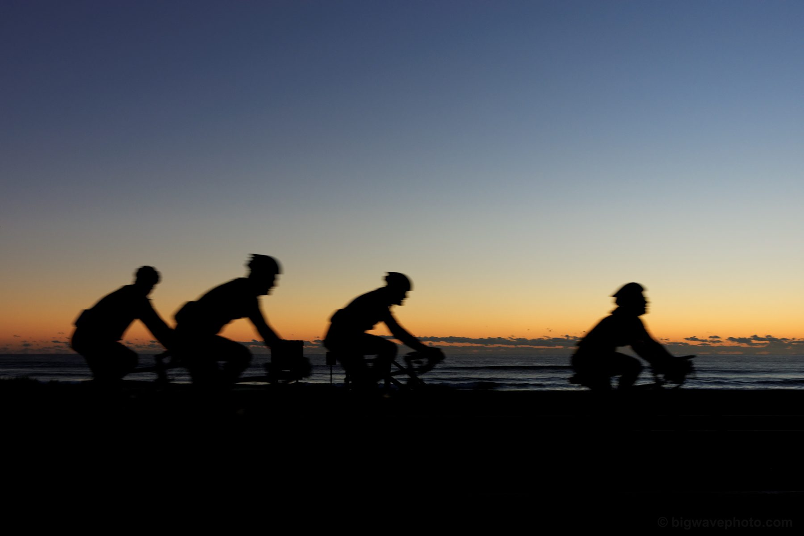
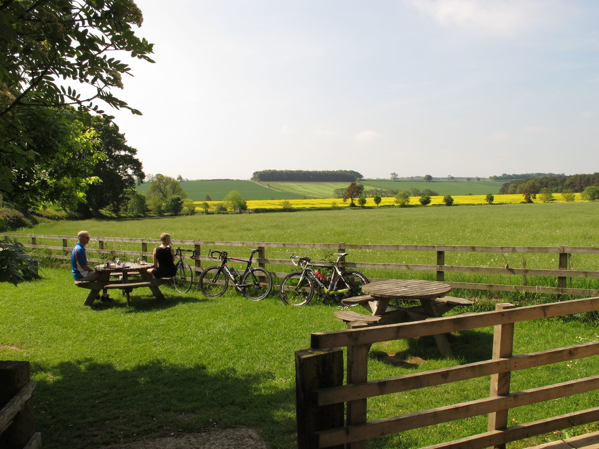

Комьюнити
Refactor Cycling Club — это не только тренировочные планы. Это люди, с которыми вы выезжаете по субботам, делитесь маршрутами и празднуете личные рекорды.
На чём мы держимся
Три принципа, которые определяют, как устроено сообщество.
Любой темп — свой
Группы делятся по среднему темпу, а не по амбициям. Новичок и гонщик находят компанию в один и тот же вечер.
Никого не бросаем
На каждом групповом заезде есть замыкающий — темп группы равен темпу самого медленного участника.
Прогресс важнее эго
Мы отмечаем личные рекорды наравне с призовыми местами — километраж и техника растут у всех по-своему.
Суббота начинается в 7:00
Каждую субботу три группы стартуют с разным темпом — от спокойного восстановительного до темпового с элементами интервалов. Маршрут меняется каждую неделю, а после — общий сбор в оговорённой точке.
Присоединиться может любой: регистрация в приложении клуба, велосипед и шлем — всё, что нужно для старта.

Половина клуба — это разговоры после финиша
Групповой выезд редко заканчивается на финишной точке — добрая половина клуба обычно остаётся на кофе. Именно здесь чаще всего рождаются новые маршруты, обмен опытом и компании для длинных стартов.
Партнёрские кофейни на маршрутах отмечены в приложении отдельным значком — с местом под велосипед и розетками для навигаторов.


Runtime — тёмно-синяя база и бирюзовые полосы «потока данных»: будто лог выполнения прямо на спине.
Четыре версии одного кода
Джерси клуба выходит в четырёх раскладках — но идея одна на всех: узор читается как графики нагрузки и схема системы, а не просто орнамент. Листайте карточки, чтобы увидеть все варианты.
Каждому райдеру доступна именная версия — с ником из тренировочного приложения на спине, как второй репозиторий с историей заездов.
Расписание недели
Регулярные групповые заезды — приходите без предварительной записи.
Голос пелотона
Что говорят райдеры, которые уже тренируются с нами.
«Профили подъёмов на маршрутах — то, чего мне не хватало. Больше никаких неожиданных стен на 10-м километре».
«Начал с трека полгода назад — тренировочные планы помогли не перегореть в первый же месяц».
«Сообщество реально живое: находишь группу под свой темп в любой день недели».
Первый заезд — за нами
Оставьте почту — пришлём расписание ближайших групповых заездов в вашем городе.